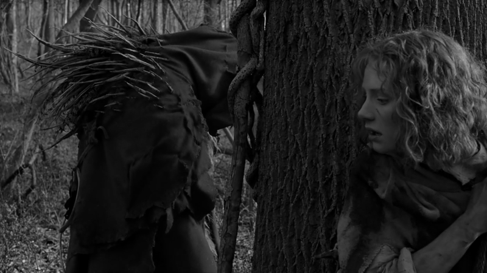

Those who all too easily dismiss Night M. Shyamalan's films as the lowest of the New Age kitsch are in for some surprises. The Village takes place in a Pennsylvania village cut off from the rest of the world and surrounded by woods full of dangerous monsters known to the villagers as 'Those We Don't Speak Of.' Most villagers are content to live with a bargain they made with the creatures: they don't enter the forest, the creatures don't enter the town. Conflict arises when the young Lucius Hunt wishes to leave the village in search of new medicines, and the pact is broken. Lucius and Ivy Walker, the village leader's blind daughter, decide to get married, which makes the village idiot really jealous; he stabs Lucius and nearly kills him, leaving him at the mercy of an infection that requires medicines from the outside world. Ivy's father then tells her about the town's secret: there are no monsters, and the year isn't really 1897. The town elders were part of a 20th-century crime victims' support group which decided to withdraw from it completely; Walker's father had been a millionaire businessman, so they bought a bunch of land, called it a 'wildlife preserve,' surrounded it with a big fence and lots of guards, bribed government officials to reroute airplanes away from the community, and moved inside, concocting the story about 'those we do not speak of' to keep anyone from leaving. With her father's blessing, Ivy slips outside, meets a friendly security guard who gives her some medicine, and returns to save her betrothed's life. So, at the film's end, the village elders decide to go on with their secluded lives: the village idiot's death can be presented to the non-initiated as a proof that the creatures exist, confirming the founding myth of the community.
Sacrificial logic is thus reasserted as the condition of a community, as its secret bond - no wonder that most of the critics dismissed the film as the worst case of ideological cocooning: "It's easy to understand why he's attracted to setting a movie in a period where people proclaimed their emotions in full and heartfelt sentences, or why he enjoys building a village that's impenetrable to the outside world. He's not making movies. He's making cocoons." The desire underlying the film is thus the desire to recreate a closed universe of authenticity in which innocence is protected from the corrosive force of modernity: "It's all about how to protect your innocence from getting hurt by the 'creatures' in your life; the desire to protect your children from going into the unknown. If these 'creatures' have hurt you, you don't want them to hurt your children and the younger generation may be willing to risk that."
Upon a closer look, however, the film reveals itself to be much more ambiguous. When reviewers noticed that "the movie is in H.P. Lovecraft territory: severe, wintry New England palette; a suggestion of inbreeding; hushed mentions of 'The Old Ones,' 'Those We Don't Speak Of'," they as a rule forgot to mention the political context: let us not forget that the 19th century self-subsistent community also refers to the many utopian-socialist communities that thrived in the late 19th century US. This does not mean that the Lovecraft reference to supernatural horror is just a mask, a false lure. We have two universes: the modern open "risk society" versus the safety of the old secluded universe of Meaning - but the price of Meaning is a finite closed space guarded by unnamable Monsters. Evil is not simply excluded in this closed utopian space - it is transformed into a mythic threat with which the community establishes a temporary truce and against which it has to maintain a permanent state of emergency.
The "Deleted Scenes" special feature on the DVD release all too often makes the viewer only realize that the director was right to delete these scenes - however, in the DVD edition of Village, there is an exception to this rule. One of the deleted scenes is that of a "Drill": Walker rings the bell, giving to the community the signal to practice the fast retreat into underground shelters in the case of the creatures' attack - as if authentic community is only possible in the conditions of a permanent threat, in a continuous state of emergency.
This threat is, as we learn, in the best "totalitarian" manner staged by the inner circle ("elders") of the community itself, in order to prevent the non-initiated youngsters to leave the village and risk the passage through the forest to the decadent "towns." The "evil" itself has to be redoubled: the "real" evil of late-capitalist social disintegration has to be transposed into the archaic magic-mythic evil of "creatures." The "Evil" IS a part of the "inner circle" itself, IMAGINED by its members. Are we here not back at Chesterton's Thursday, in which the highest police authority IS the same person as the super-criminal, staging a battle with himself? In a proto-Hegelian way, the external threat the community is fighting is its own inherent essence...
And what if this is true in a much more radical way than it may appear? What if the true Evil of our societies is not the capitalist dynamics as such, but the attempts to extricate ourselves from it (while profiting from it), to carve out self-enclosed communal spaces, from "gated communities" to exclusive racial or religious groups? That is to say, is the point of The Village not precisely to demonstrate that, today, a return to an authentic community in which speech still directly expresses true emotions, etc. - the village of the socialist utopia - is a fake which can only be staged as a spectacle for the very rich? The exemplary figure of Evil are today not ordinary consumers who pollute environment and live in a violent world of disintegrating social links, but those (top managers, etc.) who, while fully engaged in creating conditions for such universal devastation and pollution, exempt themselves from the results of their own activity, living in gated communities, eating organic food, taking holidays in wild preserves, etc.
Source